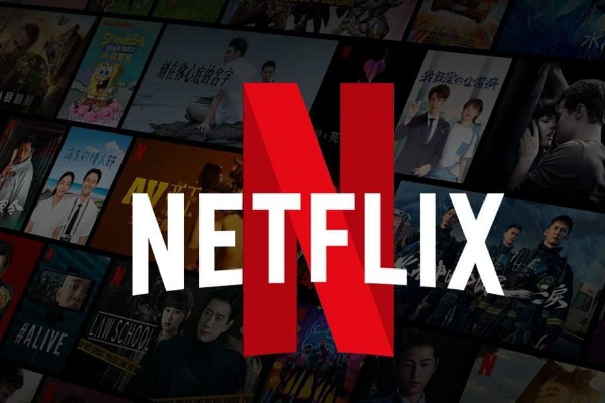
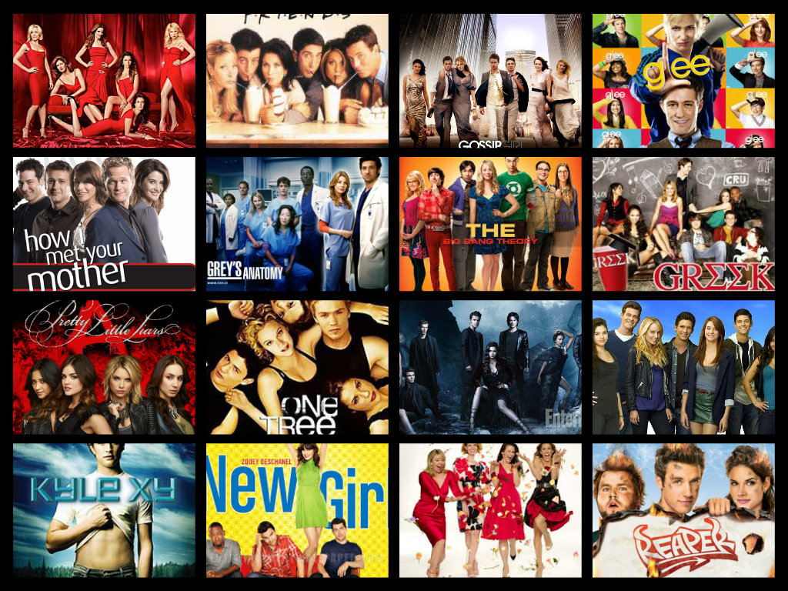

Min hobby
Att titta på serier är en av mina favorithobbies på fritiden. Jag tycker att det är ett bra sätt att koppla av och underhålla mig. Jag tycker om många olika genrer, från roliga komedier och spännande draman till actionserier. Men mest av allt föredrar jag serier med intressanta karaktärer och berättelser som håller kvar ens intresse.

